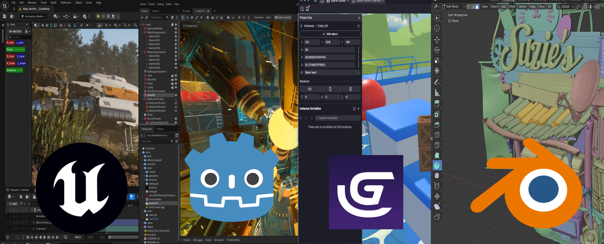
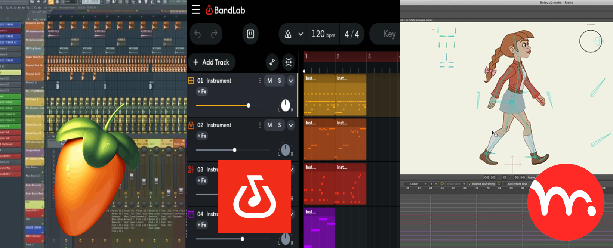

Programare
program-are
Așa cum spuneam și pe prima pagină, când zic „programare” mă refer mai mult la ce programe mai știam și eu să folosesc înainte să intru în liceu. În loc de linii nesfârșite de cod, am preferat mereu să învăț softuri care mă ajută să creez chestii concrete – de la jocuri și modele 3D, până la muzică și animații.
Uite o listă cu programele prin care mi-am pierdut timpul (în cel mai bun sens) și ce am reușit să fac în ele:
Dezvoltare de jocuri & 3D
Unreal Engine 5: Softul în care am pus cel mai mult osul la treabă. Am creat mai multe jocuri aici și, ce este cel mai tare, pe unele am apucat chiar să le și public.
Godot: Un alt motor de jocuri pe care l-am butonat destul de mult și în care am experimentat diverse proiecte.
GDevelop: Programul pe care l-am folosit special atunci când voiam să fac jocuri 2D, fiind mult mai rapid pentru tipul ăsta de proiecte.
Blender: Aici se întâmplă magia pe partea de grafică. Îl folosesc pentru modelare 3D, ca să pot să-mi creez propriile obiecte și decoruri pentru jocuri.

Media
FL Studio: Programul de bază atunci când vine vorba de compus muzică și creat beat-uri de la zero.
BandLab: O altă platformă pe care o folosesc pentru muzică, fiind super accesibilă atunci când vreau să schițez rapid o idee.
Audacity: Softul clasic pe care îl folosesc ori de câte ori am nevoie de editat sunet brut, tăiat clipuri audio sau curățat zgomotul de fundal
Moho: Programul în care am învățat să fac animație 2D. Am reușit chiar să creez și un mini-serial de două episoade în el.
